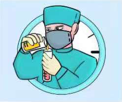

抗疫宣传图册

- 

Copyright◎2021年第十六届江西省大学生计算机作品赛版权所有最佳分辨率: 1360x768
抗疫精神，是在抗击新冠肺炎中形成的众志成城抗击疫情的精神。
二十字伟大抗疫精神：生命至上，举国同心，舍生忘死，尊重科学，命运与共。
“一方有难、八方支援”和集中力量办大事，一直以来是我们的独特优势。面对疫情，以习近平同志为核心的党中央统一指挥、统一部署、统一调度，举全国之力，组织调派330多支医疗队、4万多名军地医护人员紧急驰援；组织26个省份对口支援，19个省市采取“一省包一市”方式，将大量医疗设备、人员、物资往湖北倾斜。各省区市步调一致、统一行动，相继启动重大突发公共卫生事件一级响应，及时构建联防联控、群防群控体系，打造了一张严防死守的天罗地网，形成了全面动员、全面部署、全面加强的防控局面。这种举国体制下的同仇敌忾、共克时艰，上下一心、众志成城令世人动容。
明知前方山有虎，但总有一群人“不计报酬，无论生死”，迎难而上！1月23日，武汉封城。在小年夜，有唯一一列赶往武汉的高铁。各省区市步调一致、统一行动，相继启动重大突发公共卫生事件一级响应，及时构建联防联控、群防群控体系，打造了一张严防死守的天罗地网，形成了全面动员、全面部署、全面加强的防控局面。
严峻疫情让很多地方一时间进入战时状态，这种状态下需要有非常举措、超常规做法。火神山、雷神山医院仅用不到十天时间奇迹般建成并开始集中收治，完成了看似不可能完成的任务；具有战地色彩的十余家方舱医院迅速开设，实现了从未有过的一种新创举。一声号令，迅速集结，毫无怨言，毫不犹豫，这种作风、姿态和速度让世人惊叹。
疫情汹汹，中国与病魔竞速，同时间赛跑！2020年2月2日，武汉火神山医院在数千万网友的“云监工”下正式完工。7000余名建设者日夜鏖战，仅用10天的时间，赶出了一个有着1000余个床位和34000平方米的建筑面积的火神山医院！此外，从决定开建到2月5日交付使用，雷神山医院的建成也只用了10天左右。“平地起医楼，当惊世界殊”——“中国速度”再次震惊世界，“基建狂魔”的称号名副其实！有国家做后盾，我们一定能够打赢这场战“疫”！ 如果说奇迹有颜色，那一定是中国红！
中央确定“内防扩散、外防输入”的战略策略，堵住传染源、切断传播链至关重要。为顾全大局，一座千万级别人口的武汉被“封城”，湖北省对人员外流实施全面严格管控。这一需要巨大政治勇气的决断，展现了极大的自我牺牲精神。局部的奉献是为了全局的安稳，这是一种代价，也是走好下赢“这盘大棋”的关键一招。为了疫情防控大局，14亿中国人行动起来,“宅”在家里，以一种特别方式默默地贡献自己的力量。
网络上有句武汉网友的留言：「我的城市生病了，但是我们会治好她，还是欢迎您以后再来武汉。」
但「封城」却隔绝不了各方的支援与关爱。白衣天使逆行，全力战疫；各地医疗队纷纷奔赴武汉；各地紧急调运的医用防护物资、生活物资不断运至武汉；素不相识的可以通过互联网传递友爱与温情。
“沧海横流，方显英雄本色。”当病毒“魔鬼”袭来，一个个白衣天使、科技人员、解放军将士、党员干部迎难而上，他们同时间赛跑，与病魔较量，逆行的背影成了抗疫前线最美的风景。这一群群和平年代的战士们，一不怕苦、二不怕死，以救死扶伤、医者仁心的职业操守，冲锋陷阵、义无反顾。有的身患绝症，却不下火线；有的倒下了，战友同事抹去眼泪接着上；有的家人感染或病了，也无暇顾及；有的推迟婚期上“战场”；有的单车骑行找“部队”；有的夫妻双双上阵；等等。他们誓死不退，不胜不休，以一种压倒一切困难而不被困难压倒的大无畏精神战斗在抗疫一线。
致敬所有为武汉疫情默默奉献的平凡的人们，快递员、送货员、小区志愿者、厨师、清洁工、外卖员、售货员、村干部、售票员、民航航班人员、列车员、司机、公安民警、消防员、解放军……一个又一个平凡的职业，一次又一次冒险的尽忠职守，是你们用平凡的臂膀撑起这个春天生命复苏的蓬勃力量
疫情暴发时，人们难免惊慌、恐惧、焦虑和担忧。然而，党始终是中流砥柱，党的坚强领导一直是定海神针，制度优势日益彰显，还有那一面面高扬的党旗、一个个救死扶伤的“勇敢的人”，他们是主心骨、定心丸和保护神。随着疫情防控有力有序有效地向好推进和拓展，人们心里都越来越有底了，“有信心有能力有把握”打赢这场人民战争成了社会心理主流。人们学会了在方舱医院跳广场舞、练太极，躺在病床上竖大拇指鼓劲加油等等。武汉必胜，湖北必胜，中国必胜!这是响彻华夏大地的铿锵心声，亿万人民怀着必胜的信心，向着胜利进军。
在我们党赢得新中国政权的70多年时间里，所有的大灾大难都是在党的英明领导下取得的最终胜利，也只有中国共产党才能够引领中国人民走向实现中华民族伟大复兴的康庄大道。我们的党有着世界上任何资本主义政党都不具备的天然优势，那就是她具有伟大的人民性这一天然基因。
Copyright◎2021年第十六届江西省大学生计算机作品赛版权所有最佳分辨率: 1360x768